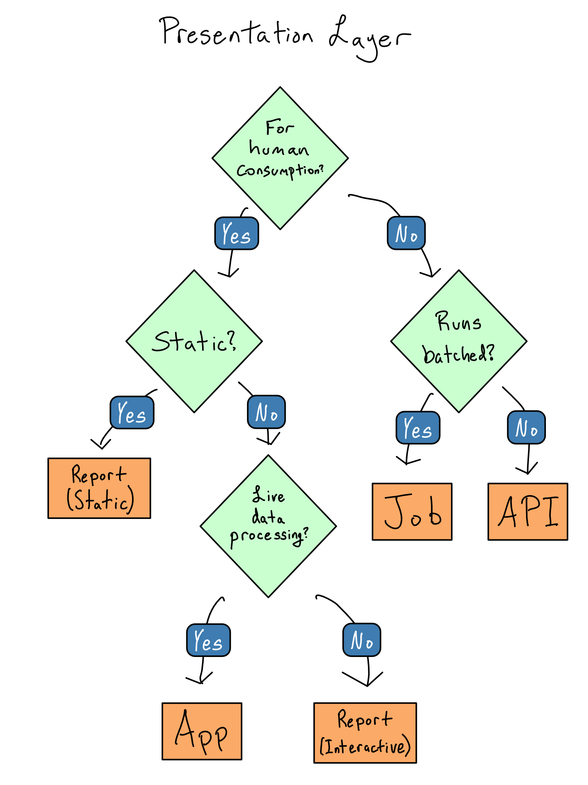

(All content from Gold (2024))
22 September, 2025
From Gold (2024), Introduction.
From Gold (2024), Chapter 1.
From Gold (2024), Chapter 1.
There are three different places packages can live:
Success means:
(We use uv for this, cf Gold (2024) who uses venv.)
From Gold (2024), Chapter 1 “An import or library statement triggers a call to sys.path, which returns directories to search. That returns a package to the session”.

scripts create analysis_data.parquet, which is then loaded in paper.qmd.analysis_data.parquet required within paper.qmd.From Gold (2024), Chapter 2.
Activity: Please partner with someone who did the homework and with pen and paper write out their data flow chart.
From Gold (2024), Chapter 3.
Discussion: Show code to interact with the OpenDataToronto API.
Activity: Please partner with someone new and use requests to get the NASA APOD using their API: https://api.nasa.gov/.
os.getenv("<VAR_NAME>")Activity: What is the name of the environment variable that stores my OpenAI key in https://zenodo.org/records/17106979? (/scripts/get_codes.py)
Development environment:
.env file into your session, likely using python-dotenv or os.getenv().Production environment:
Two ways of being wrong:
When it comes to data science if we’re wrong we want to know about it. Observability is the way to enable this. Two aspects:
Gold (2024), Chapter 5.
Gold (2024), Chapter 5.
Gold (2024), Chapter 5.
Gold (2024), Chapter 6.